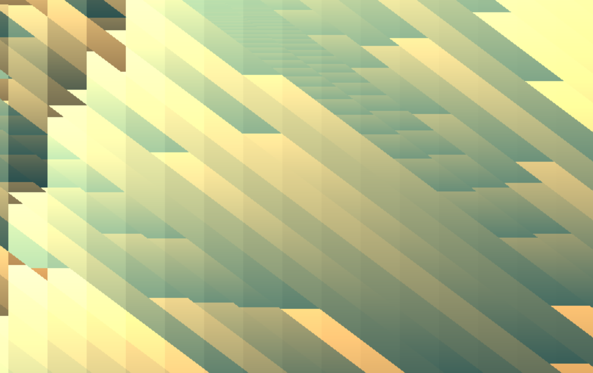

----Personal Essays----
This page contains a series of personal essays, with the newest being first and the oldest being last. It would be best to read these in chronological order. These personal essays are similar to some sort of blog post, and I will continue to update them as time permits. Also, note that I am aware my writing is bad and constructive criticism is welcome. Send me an email.
My Exchange in Germany
 Jasper Holton | August 12, 2015
Jasper Holton | August 12, 2015
I would like to be able to update this essay collection more often, but unfortunatley I do not have the time. I am currently on a youth exchange in Wesel, Germany. Because of this, my time is limited and my focus is no longer on coding and writing these essays. However, I will continue updating my exchange essays, which can be found here.

WebGL Shaders: Combining Coding and Art
Jasper Holton | August 3, 2015
I have recently been working with some shaders that use WebGL and a javascript engine, but are coded in C. I use a javascript helper made for game design called Phaser (Phaser.io).

Using some simple scripts made in languages such as C, I was able to create animations within Phaser frames.
Phaser.io in a WebGL animation from GLSLSandbox.
A digital storm I created
Here are some other shaders that are very interesting, I reccomend you check them out. These probably will work best on non-mobile devices. Some of these are also still in development, and I will have more here in the future.
- Digital Fire
- Digital Storm
- Fractals
- Mouse
- Scope
- Seascape
- Sloth
- Starlight
- Swirl
- Test
- Tunnel
- Andy (Dedicated to Andy James), who can be found here
If you are interested in looking at the code for these, you can look on my Github. All of it is open source, and you can click the button above to get to it.